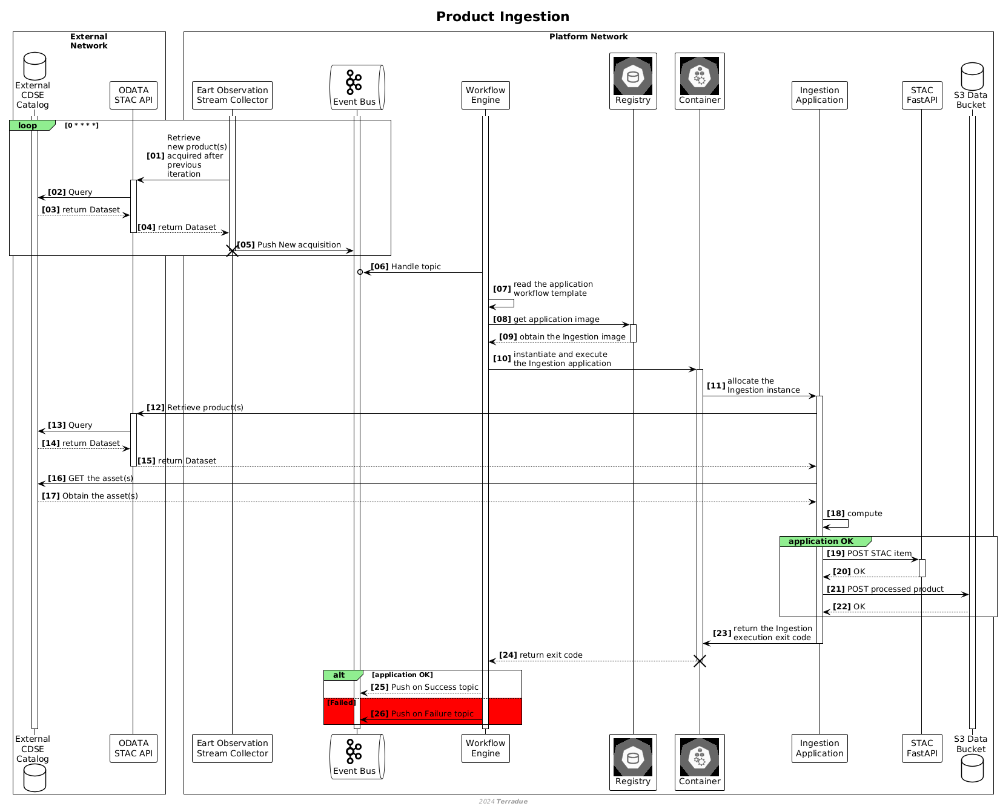

Overview
Tres niveles de ingesta: recolección de metadatos, recolección con copia del dataset y recolección con calibración; diagrama de secuencia del flujo entre componentes.

The Data Ingestion interface in the CopernicusLAC system is responsible for managing the intake of EO data from external sources, particularly the Copernicus Data Space Ecosystem (CDSE). This process accommodates multiple levels of ingestion, depending on the dataset’s role and user requirements:
- Metadata Harvesting: The platform registers metadata and access points for externally hosted datasets, enabling discovery and retrieval without duplicating the original data.
- Metadata Harvesting and Dataset Copying: In cases where datasets are essential for local processing or frequent use, both metadata and the datasets themselves are ingested and stored in the platform’s infrastructure.
- Metadata Harvesting with Calibration: Specific datasets may undergo additional calibration or transformation workflows during ingestion to meet predefined analytical or quality requirements.
At its maximum extent, this process involves triggering the ingestion workflow, validating the data, and making it accessible within the platform for further processing and analysis.
The sequence diagram above outlines the flow of interactions between different components during the ingestion process.